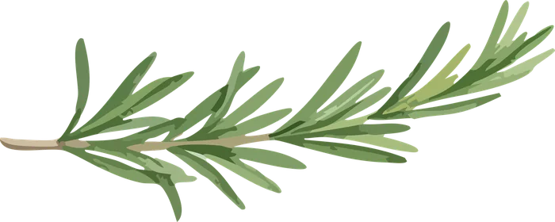
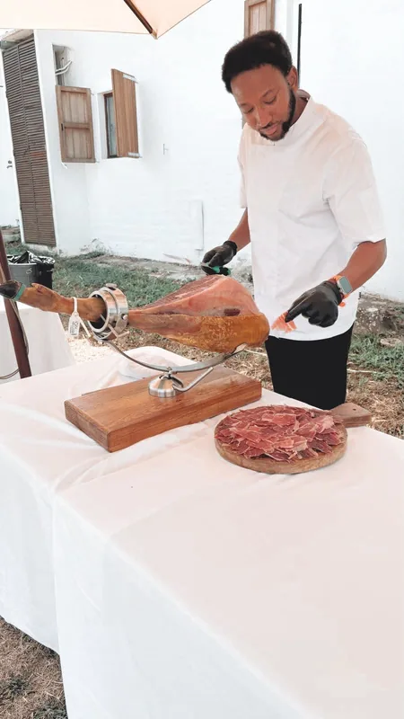
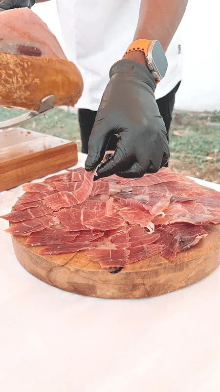
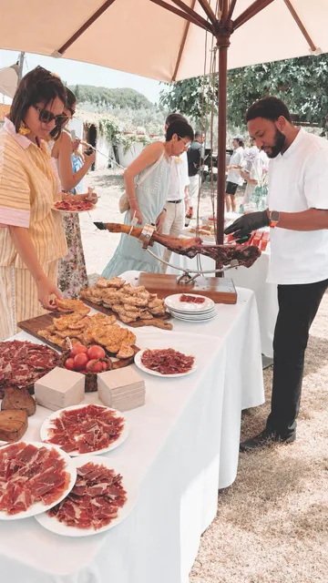
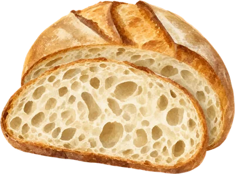
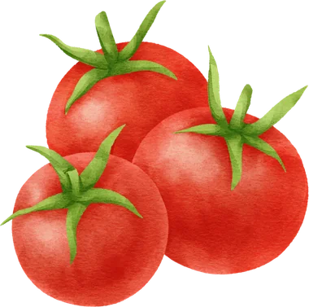
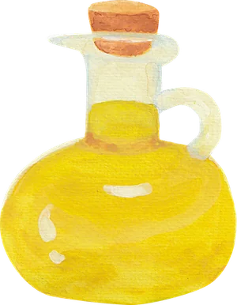
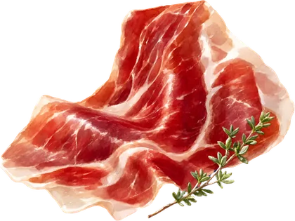
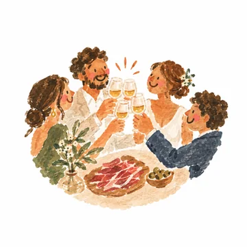

Totes dues fan servir les fotos, el logo i els colors actuals. Fixa't en la sensació general, no en els textos (són d'exemple, el testimoni també). Pots clicar «M'agrada aquesta» en la que et faci dir «ostia, vull això», o comentar què agafaries de cadascuna.
La web actual, crescuda: lletra feta a mà, paper, polaroids, romer dibuixat. Proper, divertit, artesà.

Soc en Joan. Porto el pernil, el ganivet i les ganes perquè els vostres convidats en parlin durant anys.



— en JoanCada pernil el trio pel seu punt de curació. Cada llesca, fina i amb paciència. I mentre tallo, xerro amb els vostres convidats: això també forma part del servei.
Pa amb tomàquet, oli de la terra i un bon pernil. No cal res més per fer-ho memorable.





La gent encara ens parla d'en Joan. Va ser el racó més ple de tota la boda!Laia & Marc · Casament a l'Empordà (text d'exemple)
Foto a pantalla completa i una lletra amb serif elegant; la lletra a mà només com a detall. Més «boda», més premium, igual de càlid.
Pernil ibèric tallat a mà, en directe, davant dels vostres convidats. Un ritual que es converteix en el racó preferit de la festa.
Soc en Joan. Trio cada pernil pel seu punt de curació i el tallo amb calma, llesca a llesca, mentre els vostres convidats s'hi acosten i hi fan petar la xerrada.
Muntatge, presentació i desmuntatge inclosos. Vosaltres només heu de gaudir.
La gent encara ens parla d'en Joan. Va ser el racó més ple de tota la boda.Laia & Marc · Casament a l'Empordà (text d'exemple)
Bocetos ràpids per triar direcció; la web real tindrà animacions suaus, galeria completa i formulari.